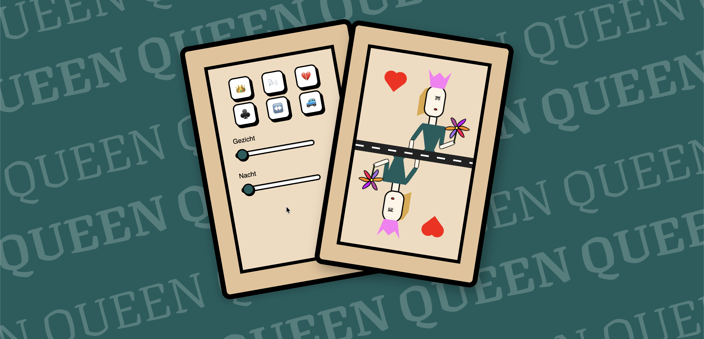
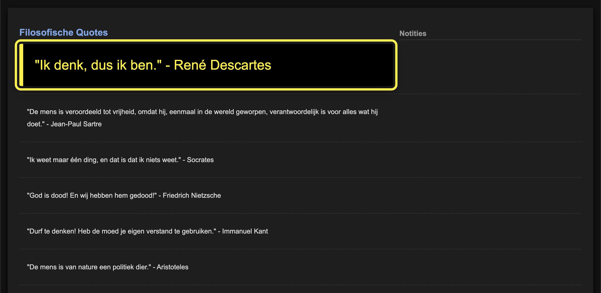
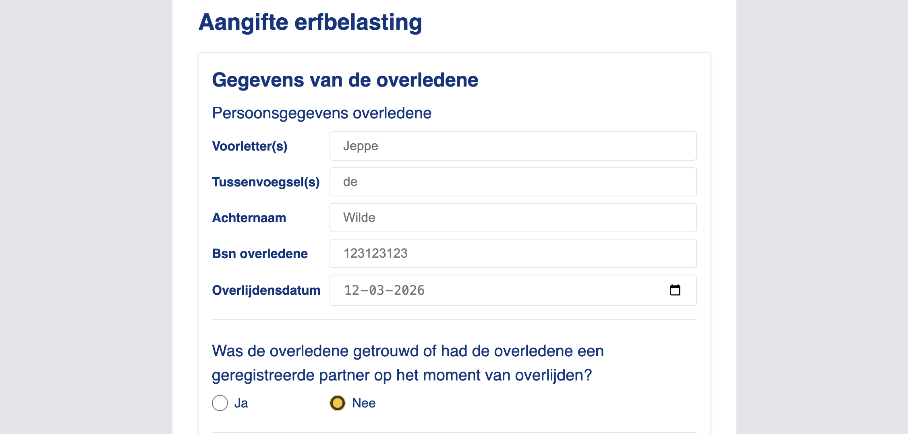
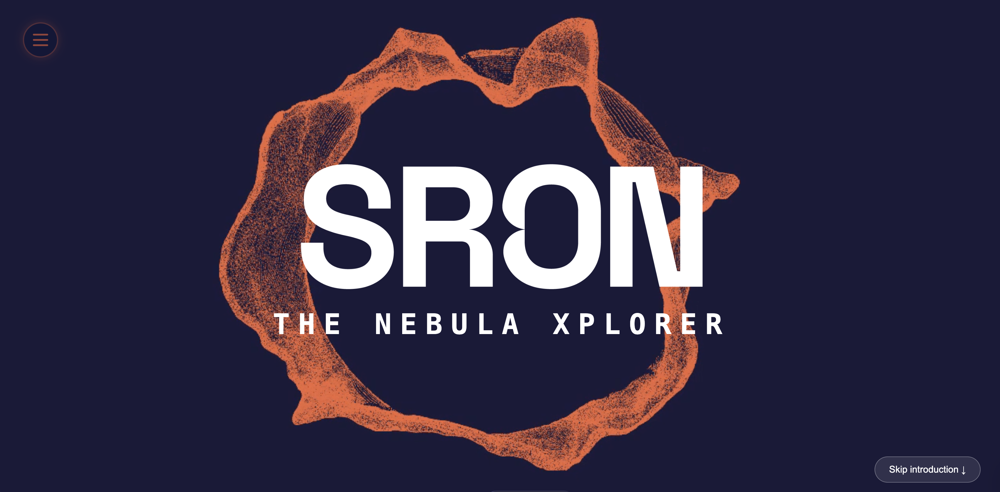
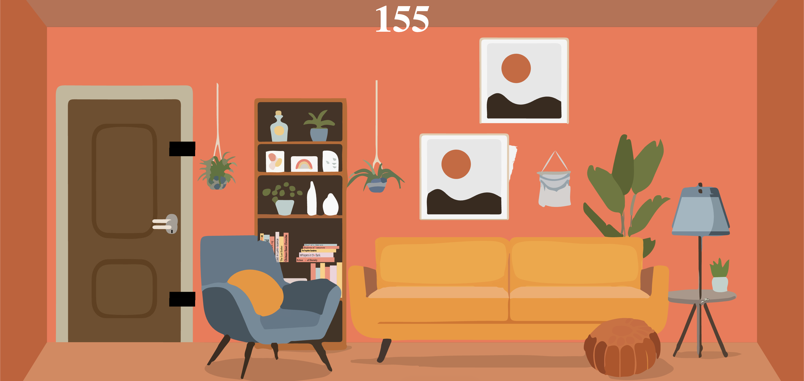
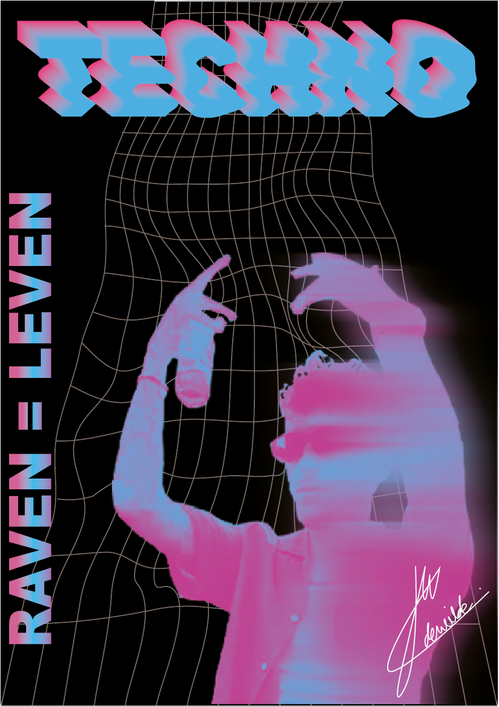
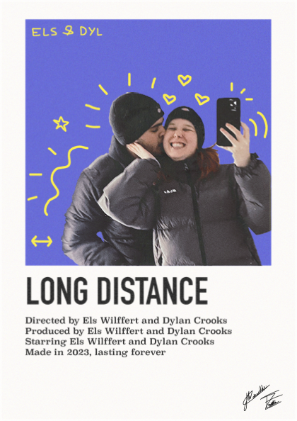
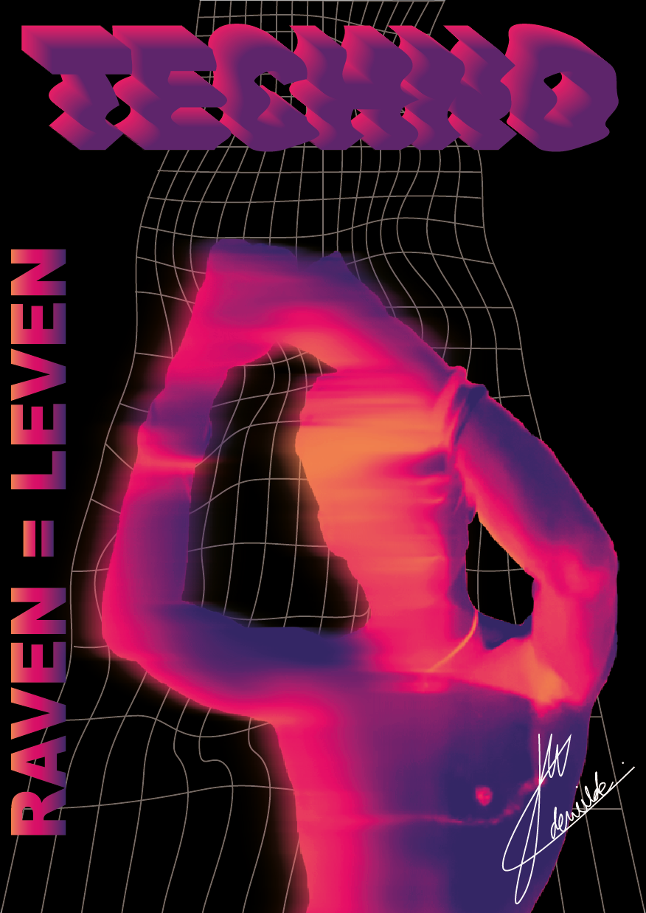
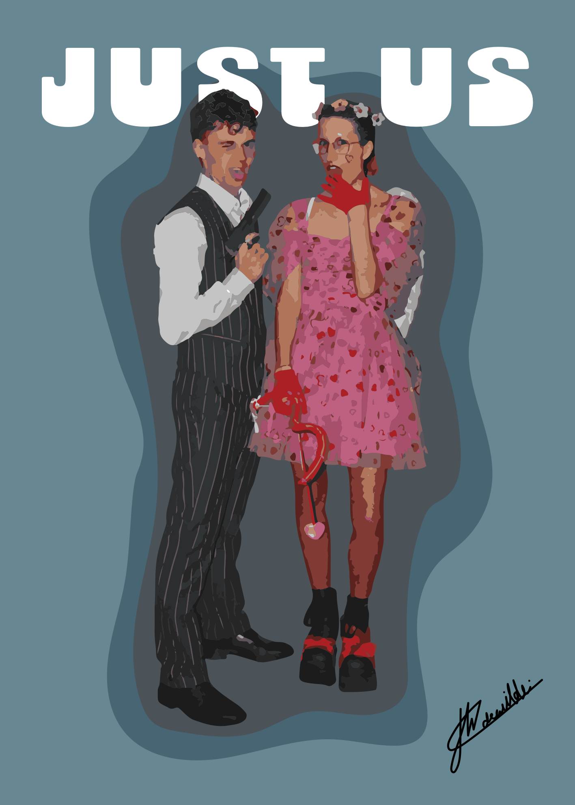
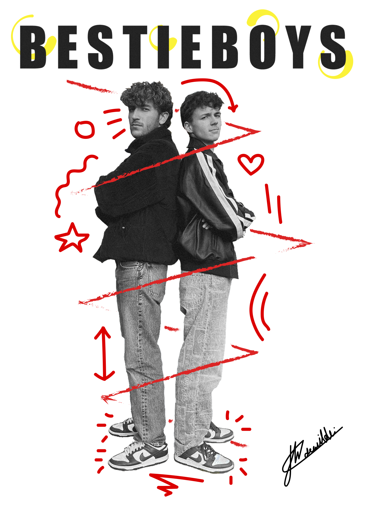

Interactieve speelkaart
Een CSS only control panel met focus op geavanceerde CSS animaties en strakke UI.
Voor het vak CSS, Minor Web Design & Development.
Bekijk Live Demo ↗Meer projecten, zowel van de opleiding Communicatie en Multimedia Design (CMD) als van de minor Web Design & Development (MWDD), plus een paar visuele uitingen.

Een CSS only control panel met focus op geavanceerde CSS animaties en strakke UI.
Voor het vak CSS, Minor Web Design & Development.
Bekijk Live Demo ↗
Een webapplicatie voor één specifieke gebruiker, Roger. Roger heeft maculadegeneratie en is bijna volledig afhankelijk van een screenreader. Hij wilde een webapplicatie waarmee hij aantekeningen kan maken bij zijn filosofie teksten. NB. Bezoek deze webapplicatie met screen reader!
Voor het vak Human Centred Design, Minor Web Design & Development.
Bezoek Webapp ↗
Formulier voor aangifte erfbelasting in de huisstijl van de NS. Focus op Progressive Enhancement en validatie.
Voor het vak Browser Technologies, Minor Web Design & Development.
Bekijk Live Demo ↗
Een teamproject waar wij in 4 dagen een 'out of the box' website en digitale ervaring ontwierpen voor de Nebula Xplorer.
Voor het vak Hackathon, Minor Web Design & Development.
Bekijk Live Demo ↗
Mijn eerste project met javascript. De opdracht was om een spel te bouwen, ik wilde mezelf uitdagen en bouwde een escaperoom.
Voor het vak inleiding programmeren, Communication & Multimedia Design.
Bekijk Live Demo ↗



